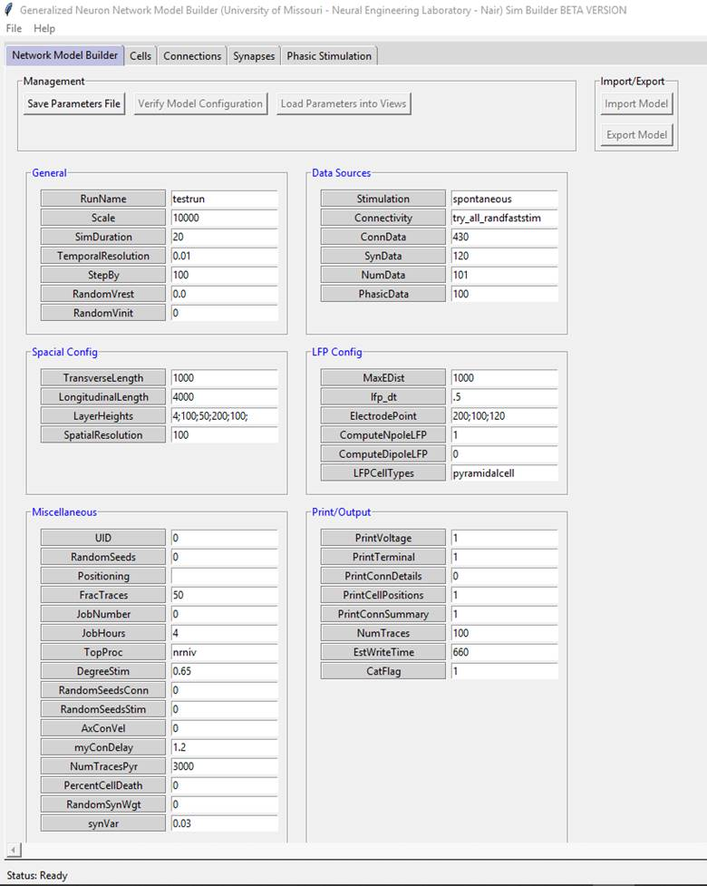

Using
simbuilder to build Lower Urinary Tract (LUT) network
model
· The
base model can be downloaded from https://tjbanks.github.io/SimBuilder/
· A generalized neuron network builder based on Marianne Bezaires CA1 model.
Extract the
zip folder and run sim_builder.exe to get started.

Network Model Builder: Add general description
1) General:
Add general description
RunName:
Name of Simulation run // lutrun
Scale:
Network Scale (1:Scale) // Where is this used? Fullscale
= 1
SimDuration:
Duration of Time simulated (msec) // 30000
Temporal
Resolution: Temporal resolution of the simulation (msec) // 0.01
StepBy:
Number of milliseconds to run at a time // 100
RandomVrest:
Standard deviation away from Vrest for RMP of each
cell // 0.0
RandomVinit:
if not zero, then initial values are randomized// 0
2) Data Sources:
Add general description
Stimulation:
Filename of the stimulation protocol used to stimulate the network. In the SimBuilderBase folder look for Stimulation folder. By
default there are several stimulation types provided that are used in original
CA1 model.
NOTE: You will need to create your own
stimulation if you cannot use the ones already there and save it as name_stimulation.hoc in stimulation folder to use it via simbuilder. Show example case for LUT proj?
Stimulators are connected to real
cells here.
Use
spontaneous for background and specific connections for stimulators specified
in main.hoc file
Ecca3sintrain:
Add general description
Oscillation: This uses the phasic
file under datasets. phasic_xx.dat file is created
based on phasic simulation parameters set in section 6 below. NOTE: hoc file is
similar to Ecca2sintrain.
Pulse:
I find this is more specific to hippocampus model and its connection perforant path projections to different cells. I believe Perforant path stimulation is provided from elsewhere. Vinay to check later for Hipp model
Ripple:
This file is checking if a certain cell are Ca3 ripple or on_cells
and connecting them and associate different netstim
to both.
Ripple_Spontaneous:
Loads cells connectivity for ripple and spontaneous stimulation
Spontaneous:
Poisson background input can be provided using this file.
This file defines two procedures
related to spontaneous stimulation:
· connectStims:
this is used when each cell needs to have its own, unique excitatory spike
train input. This procedure connects a specific artificial cell to each real
cell of the model, so that each real cell has its own independent input.
· setNoise:
this procedure sets the properties of the random number generators that are
then associated to the noise functionality of the artificial cells. Each
artificial cell has its own, unique random stream that is associated to its
noise algorithm. The noise algorithm then draws from that random number stream
to determine the interspike intervals that define the
spike train pattern of the cell.
Spontpos:
Same as spontaneous stimulation above but modified to include stimulation based
on position either by absolute position (x,y)
or relative to a point.
Test:
a test case of pulse stimulation.
Vector:
Uses gid to connect and provide netstim.
More appropriate to use in LUT proj for stimulators. Need to update according to LUT
stimulators.
Connectivity:
Filename of the connection protocol used to connect the cells of the network.
Individual files specifying probability, strength and delay of each connection
type. (SW_BLA is
implemented in a different way)
Try_all_randfaststim:
This
file defines and calls a procedure for creating connections between all of the
cells of the network. MakeArtConns
flag to 0 (This will not allow artificial cell connections) or will need to
ensure that the ConnData dataset (conndata_###.dat
file) being used specifies 0 connections for the connections that they do not
want managed by this algorithm.
Does not allow a
presynaptic cell to make multiple connections to a single postsynaptic cell.
Try_all_repeatstim:
"repeatconn" algorithm will keep making multiple
connections from a cell that satisfies the distance and type requirements so
that the overall convergence onto the postsynaptic cell satisfies the desired
level. However,this will
result in a rigid, strongly interconnected network.
ConnData:
File identifier connection dataset to use. // Ex:105,
file associated conndata_105.dat will be used.
SynData:
File identifier synapse dataset to use. // Ex: 205 file associated
syndata_205.dat will be used.
NumData:
File identifier number of cells dataset to use. // Ex: 305 file associated
cellnumbers_305.dat will be used.
PhasicData:
File identifier phasic dataset to use. // Ex: 405 file associated
phasic_405.dat will be used.
3) Spacial Config:
(Used default for now but LUT model doesn’t have spatial dependency) Need to add more details
on where and how they are used etc.
4) LFP Config:
(Used default for now but LUT model don’t need this) Need to add more details on where and how
they are used etc.
5) Miscellaneous:
UID:
Unique
ID for this simulation run // 55555
RandomSeeds: Method used to
assign seeds to random processors //0 ( what different methods we have?)
Positioning: Algorithm
used to position the cells (Need
to find more info)
FracTraces:
The percent of cells to record intracellularly, for each cell type// 1
JobNumber:
Job number assigned by supercomputer // 0
JobHours:
Number of hours to let the run go for // 4
TopProc:
NEURON process name in the top command// nrniv
DegreeStim:
Degree of stimulation; meaning depends on Stimulation type // check for spontaneous
RandomSeedsConn:
Starting highIndex used by connectivity streams // 0 Look into this
RandomSeedsStim:
Starting highIndex used by stimulation streams //0 Look into this
AxConVel:
Axonal conduction delay in um/ms, usually 250-500 // Set
to 0 to use constant value of 1.4 ms
myConDelay:
Axonal conduction delay (~1.2)
NumTracesPyr:
The maximum number of pyramidal cells to record intracellularly // Not sure
about value
PercentCellDeath:
Percent of cells that are killed (removed), for cell types flagged for cell
death // 0
RandomSynWgt:
value >0 indicates that synapse weights should vary with the specified
weight as the mean. 1: a normal distribution, 2: a lognormal distribution, 3: a
uniform distribution // 0 (check)
synVar:
Fraction of the mean synapse weight that should be set as the standard
deviation in the normal distribution of synapse weights for randomized synapse
weights. // 0.03
6) Print/Output:
PrintVoltage: Flag for recording
and printing intracellular voltage traces for select cells //1
PrintTerminal:
Level of printouts to screen (affects run time) 0: minimal, 1: some, 2: max
printouts// 1
PrintConnDetails:
Flag for printing the detailed
connection matrix //1
PrintCellPositions:
Flag for printing the cell positions //0
PrintConnSummary:
Flag for printing the summary connection matrix // 1
NumTraces:
The maximum number of cells to record intracellularly, for each cell type// 100
EstWriteTime:
Number of seconds to save for the run to write out its results // 1000
CatFlag:
Whether to concatenate and remove trace
connection files // 1
Once you click save parameters file. Simbuilder will save the values from network model builder
into parameters.hoc file under steupfiles
folder.
Cells: Create cells here
You will have to change your original template
file to match templates files under cells folder and name it class_xx.hoc .
This is important otherwise you will not be able to choose the appropriate cell
template using simbuilder.
Close
simbuilder and open again, Network Model Builder
values should be automatically saved. Now click Cells => New => give a
numerical identifier (Ex: 105) your cells data will be saved under datasets/
cellnumbers_105.dat
You
can select Add row and begin populating cells here.
Ex:
Friendly Cell Name (MPGb), Cell File Name (MPG),
Number of Cells (250), Layer Index (0), Artificial:1,
Real:0 (0)
Cell File Name:
You will choose the class_celltemplate file using
drop down menu.
Layer Index:
This specifies which layer the soma of the neuron is present. Ex: Oriens, Pyramidale, Radiatum and Lacunosum-Moleculare
in hippocampal CA1 // LUT model doesn’t have layers for now.
Artificial/Real:
Artificial cells can be your netstim/ source
stimulation //In LUT model MPG stim, HG stim and PUD stim are artificial cells.
Connections: making connections
between cells. You will be able to define synaptic weights, convergence values
and no of synapses per connection. // LUT model connection file is located
under datasets/conndata_105.dat
If you click Generate New from Current Cells File it
will automatically populate a table with the real cells plus artificial cells
on left and real cells on top. You can switch between Synaptic Weights,
Convergence and Synapses to edit their values for specific connection type.
Synaptic
Weights: Strength of connection between the two neurons
specified. // default values chosen for LUT model are 0.1 and need to be tuned.
Convergence:
Total
number of connections to be randomly distributed between the presynaptic type
and post synaptic type. // 10 if connection ratio is 1:10 if connection ratio
is 1:1 and 0.1 if connection ratio is 10:1
Synapses: You will be able
to define your synapse properties here
Click
Create New and give a number identifier. You will be able to select a
presynaptic cell from cells created and a postsynaptic cell then specify
synapse type. (Currently only Excitatory synapse: MyExp2Sid and Inhibitory
synapse: ExpGABAab are available).Then you will be
able to attach the synapse to specific post synaptic target from lists created
in your class_celltemplate files. Ex: soma_list, dendrite_list etc.. // LUT model has only soma_list.
Synapse
parameters can be varied depending on distance by making different synapses
depending on condition1 or 2.
For
each synapse you will specify rise time, decay time and reveral
potential. The notations are different for inb
synapses. // Default values for LUT model (Tau1a=2.0ms, Tau2a=6.3ms, ea =0mV, Tau1b=2.0ms, Tau2b=6.3ms, eb=-80mV)
Phasic Stimulation: You can create
stimulators here.
Click
Create New and give a number identifier. You will be able to select an
artificial cell from cells list.
Specify
max frequency, Noise level, Depth and Phase. // LUT model values (MPGstim: 80Hz, 0.5,0,0) (HGstim: 80Hz, 0.5,0,0) (PUDstim:
33Hz, 0.5,0,0)
However
if you are trying to time your stimulation properly this can be done by
changing class_ppstim.hoc (Need to check if this works, especially
spontaneous stimulation and ppstim)